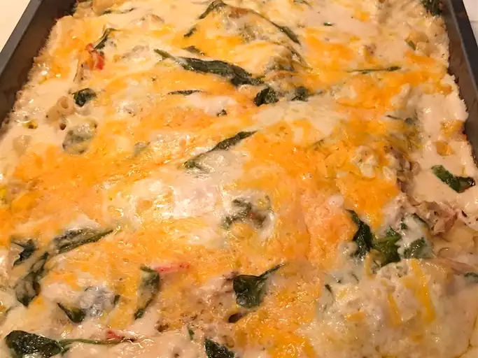

Lasagna

Description
I made up this lobster lasagna recipe because my hubby wanted to try a
lasagna made with lobster meat.
I layer tender chunks of steamed Maine lobster with pasta, jarred or
homemade Alfredo sauce, fresh spinach, and three types of cheese: ricotta,
Cheddar, and Parmesan. Serve with a tossed garden salad and oven-toasted
garlic bread.
Ingredients
- 1 (15 ounce) container ricotta cheese
- 2 cups shredded Cheddar cheese
- 2 large eggs
- 16 no-boil lasagna noodles
- 1 (10 ounce) package baby spinach leaves
Steps
-
Preheat the oven to 375 degrees F (190 degrees C). Grease a 9x13-inch
baking dish.
-
Place ricotta cheese into a large bowl. Stir in 1 cup Cheddar, 1/2 cup
mozzarella, 1/2 cup Parmesan, and eggs. Mix in onion, parsley, garlic,
and pepper.
-
Spread 1 1/2 cups Alfredo sauce over the bottom of the prepared baking
dish. Top with a layer of 4 lasagna noodles. Arrange 1/3 of the lobster
meat over noodles, then cover with 1/3 of the spinach and another layer
Alfredo sauce. Repeat layers twice more: noodles, lobster meat, spinach,
and sauce. Sprinkle remaining Cheddar, mozzarella, and Parmesan over
top. Give the whole pan a gentle shake to get everything settled in.
-
Cover the baking dish loosely with foil and bake in the preheated oven
for 45 minutes. Remove the foil and continue baking until cheese is
browned, about 10 more minutes.
- Let stand for 10 minutes before serving.